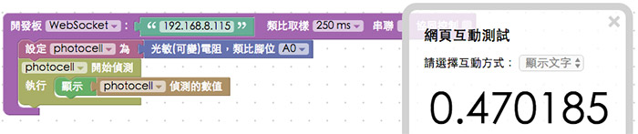
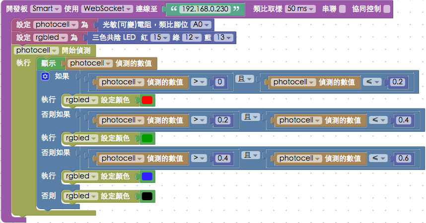

Smart 的光敏電阻
Webduino Smart 開發板的右上角內建了一顆光敏電阻 ( 腳位為 A0，也就是開發板的 AD 腳位 )，由這個光敏電阻我們就可以偵測環境的光線，做出許多簡單的光線偵測效果，不過也因為光敏電阻使用了 Smart 開發板的 AD 腳位，AD 腳位的插孔就不能給其他需要類比腳的感測器使用，要特別注意。
Webduino Blockly 操作解析
首先我們放入開發板的積木，下拉選單選擇 WebSocket ( 注意，使用 WebSocket 的工具網址必須是 http 開頭 )，填入開發板的 ip 位址，放入光敏電阻的積木，類比腳位選擇 A0。
放入光敏電阻開始偵測的積木，並讓偵測的數值顯示在網頁互動測試區域裡，點選右上方紅色按鈕執行，就會看到光的數值轉換為小數點呈現出來了。
( 解答：http://blockly.webduino.io/#-KTN3CCbrsc9--DOiD49 )

如果覺得直接類比訊號讀入的浮點數不是自己想要的數值，我們可以透過「四捨五入」和「尺度轉換」兩種積木，將光敏電阻的數值，轉換成 0 到 100 之間，小數點兩位的數值顯示。
( 解答：http://blockly.webduino.io/#-KTNZOyIdQnDG-AtSzgb )


還記得之前才提過的 Smart 三色燈初體驗 嗎？我們也可以透過簡單的邏輯判斷，讓數值 0~0.2 顯示紅色，0.2~0.4 顯示綠色，0.4~0.6 顯示藍色，大於 0.6 就，三色燈元件和光敏電阻的搭配，只需要一塊小小的 Smart 開發板就能搞定。

點選右上方紅色按鈕執行，用手去遮住光敏電阻，或是用燈去照光敏電阻，就會看見 Smart 的三色燈出現不同的顏色。 ( 解答：http://blockly.webduino.io/#-KTNdSKtD1MI-rvHamZY )

範例解析
HTML 的 header 引入 webduino-all.min.js，目的在讓瀏覽器可以支援 WebComponents 以及 Webduino 所有的元件，如果是用 Blockly 編輯工具產生的程式碼，則要額外引入 webduino-blockly.js。
<script src="https://webduino.io/components/webduino-js/dist/webduino-all.min.js"></script>
<script src="https://webduinoio.github.io/webduino-blockly/webduino-blockly.js"></script>
程式碼的部分可以看到是走 WebSocket 的模式：{transport: 'websocket', url: '192.168.8.115'}，我們純粹來看光敏電阻的用法，透過on的方法，光敏.detectedVal。
var photocell;
boardReady({transport: 'websocket', url: '192.168.8.115'}, function (board) {
board.systemReset();
board.samplingInterval = 250;
photocell = getPhotocell(board, 0);
photocell.on(function(val){
photocell.detectedVal = val;
document.getElementById("demo-area-01-show").innerHTML = photocell.detectedVal;
});
});
以上就是 Smart 的光敏電阻操作介紹。 完整程式碼：http://bin.webduino.io/luxu/edit?html,css,js,output 解答：http://blockly.webduino.io/#-KTN3CCbrsc9--DOiD49
如果您還想了解更多，可以參考：
2. Blockly 教學：https://goo.gl/Y8sRkl
3. 產品總覽：https://webduino.io/buy.html
4. 露天賣場：http://goo.gl/0Dj9ip